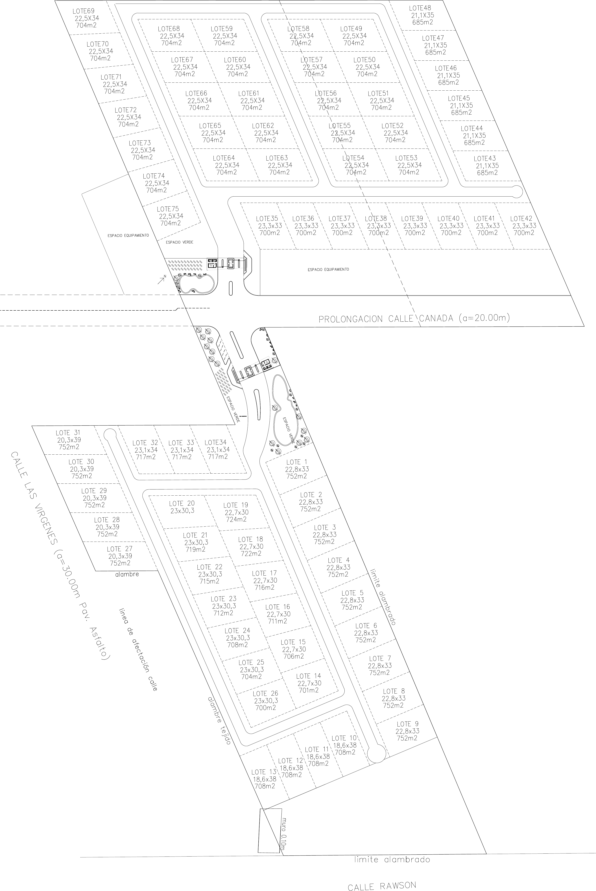

Dentro de la ciudad, no en la periferia
San Rafael tiene vida propia. Es la ciudad que organiza el sur mendocino: su economía, sus servicios y su actividad no dependen de ningún otro centro urbano. Casco Antiguo son nueve hectáreas dentro de esa ciudad, sobre el eje por donde viene creciendo, con acceso por calle Las Vírgenes a metros de la Avenida General Rawson. Un barrio cerrado dentro del área consolidada no espera que la ciudad llegue hasta él: los servicios, los colegios y el trabajo ya están ahí.
La prolongación de calle Canada divide el predio en dos. De un lado Casco Antiguo I, del otro Casco Antiguo II: cada uno con su acceso, su portería y su boulevard de ingreso, enfrentados entre sí. Dos comunidades de escala humana en lugar de un barrio de setenta y cinco lotes con una sola entrada.
Setenta y cinco lotes, ninguno de relleno

Plano de subdivisión. Las medidas definitivas son las del plano de mensura aprobado.Sesenta y siete metros cuadrados separan al lote más chico del más grande. No hay un sector bueno y otro de relleno.
Lo que no se ve es lo que define un barrio
Adoquín de hormigón H40 en espina de pez a 45 grados sobre base granular estabilizada y compactada, con cordón cuneta de hormigón y sumideros a lo largo del recorrido. Es la solución correcta para Mendoza: drena, se repara por paños sin romper la calzada y no se ablanda con la amplitud térmica como el asfalto.
La energía renovable no es un discurso: está en la obra y en el reglamento
Casi todos los barrios hablan de sustentabilidad. Casco Antiguo la aplica en dos planos que se pueden verificar: genera su propia energía para los servicios comunes, y pone el reglamento a trabajar para que cada casa consuma menos desde el día que se proyecta.
Alimenta las dos porterías, el salón de usos múltiples, el bombeo de agua y el riego: cerca del noventa por ciento de la factura eléctrica común se resuelve con energía propia, y eso baja la expensa de todos los meses. Estructura calculada para viento Zonda de 120 km/h, paneles con ensayo de granizo certificado y balance neto con medidor bidireccional bajo la Ley 27.424.
Acá está la parte que casi ningún barrio tiene. El reglamento de construcción incorpora un sistema de puntaje que evalúa cómo se proyecta cada vivienda, y otorga beneficios a quien alcanza los criterios. No es una exigencia más que encarece la obra: es un incentivo que premia al que construye bien.
Una casa bien aislada en Mendoza, con amplitud térmica de treinta grados y radiación alta, gasta una fracción de lo que gasta una mal resuelta. El ahorro es del propietario, todos los años, durante toda la vida de la casa.
El riego se mide por unidad bajo el régimen del Departamento General de Irrigación: cada propietario ve lo que consume, que es la única forma de que el recurso dure. El reglamento exige además que el 45% de cada lote sea superficie absorbente, con un mínimo del 30% efectivamente vegetado, y los solados permeables computan a la mitad. Menos suelo sellado es menos agua a evacuar en cada tormenta y más agua que vuelve a la napa.
Un espacio común, no una lista de amenities
Cada metro de uso común se paga dos veces: en el precio del lote y después, todos los meses, en la expensa de setenta y cinco familias. Sin laguna, sin piscina común, sin canchas ni gimnasio, no hay personal ni mantenimiento asociado: la expensa nace baja y se mantiene baja. Ese dinero queda en el arbolado, en el acceso y en las calles.
Cómo está armado el negocio
El desarrollo se estructura como fideicomiso inmobiliario y se extingue cuando cumple su objeto, para quedar organizado definitivamente como urbanización especial bajo el régimen de propiedad horizontal especial del Código Civil y Comercial.
Esta pieza es material de presentación y no constituye oferta. Las superficies, servicios y características definitivas son las que surgen del plano aprobado, del contrato de fideicomiso y de los reglamentos que se entregan con la documentación de adhesión.